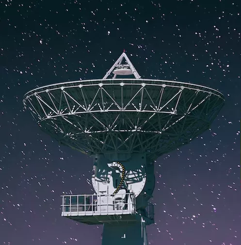

.svg)
What is confidence of life detection (CoLD)?
Confidence of life detection (CoLD) refers to the degree of certainty that a given signal or observation represents evidence of extraterrestrial life. It is an important concept in the field of astrobiology and is based on a combination of scientific knowledge, understanding of the limits of our detection methods, and the interpretation of data. CoLD is typically expressed as a probability or confidence level, with higher values indicating greater certainty that a given signal or observation is indicative of life.
Phase 1: Detection
source
source
The first phase of the CoLD protocol is discovery. This is the point at which scientists first detect a potential extraterrestrial life form. In this phase, telescopes and other instruments are used to identify signals or signatures that could indicate the presence of life beyond Earth. This could include signs of organic molecules or other chemical compounds that are indicative of life. Once a potential discovery is made, the next phase of the CoLD protocol can begin.
Phase 2: Characterization
source
Once a potential extraterrestrial signal or signature has been detected, the next phase of the CoLD protocol is analysis. In this phase, scientists work to confirm or rule out the possibility that the signal or signature is actually evidence of life. This could involve further observations or experiments to gather additional data, as well as analysis of existing data to determine whether the signal or signature is consistent with life as we know it.
Phase 3: Containment

source
If the analysis of the potential extraterrestrial signal or signature suggests that it may indeed be evidence of life, the next phase of the CoLD protocol is confirmation. In this phase, scientists work to confirm the presence of extraterrestrial life beyond any reasonable doubt. This could involve multiple lines of evidence from different sources, as well as the involvement of independent researchers to confirm the findings.
Phase 4: Control
source
Once the presence of extraterrestrial life has been confirmed, the next phase of the CoLD protocol is isolation. This is the process of isolating and characterizing the organism or organisms in question. Scientists work to determine the biological properties of the organism, including its structure, metabolism, and any unique features that could shed light on its origins or evolution.
Phase 5: Communication
source
In the characterization phase of the CoLD protocol, scientists work to gain a deeper understanding of the extraterrestrial life form. This could involve studying its behavior, interactions with its environment, or any other unique characteristics that could help us better understand the organism and its place in the universe.
Phase 6: Analysis
source
Once the extraterrestrial life form has been thoroughly characterized, the next phase of the CoLD protocol is interpretation. In this phase, scientists work to interpret the significance of the discovery for our understanding of life in the universe. This could involve developing new theories or hypotheses about the origins and evolution of life, as well as considering the implications of the discovery for our own place in the cosmos.
Phase 7: Confirmation
source
sources
The final phase of the CoLD protocol is communication. This is the process of sharing the discovery with the scientific community and the broader public. Scientists work to communicate their findings in a clear and accessible way, sharing their data and analysis, as well as their interpretation of the significance of the discovery.
Explore More:

NASA's James Webb Space Telescope website

The Hubble Space Telescope website

The Spitzer Space Telescope website

The Chandra X-ray Observatory website

The European Southern Observatory (ESO) website

The Astrophysical Journal Letters

The Space Telescope Science Institute website

The American Astronomical Society website

The Royal Astronomical Society website

The National Radio Astronomy Observatory website